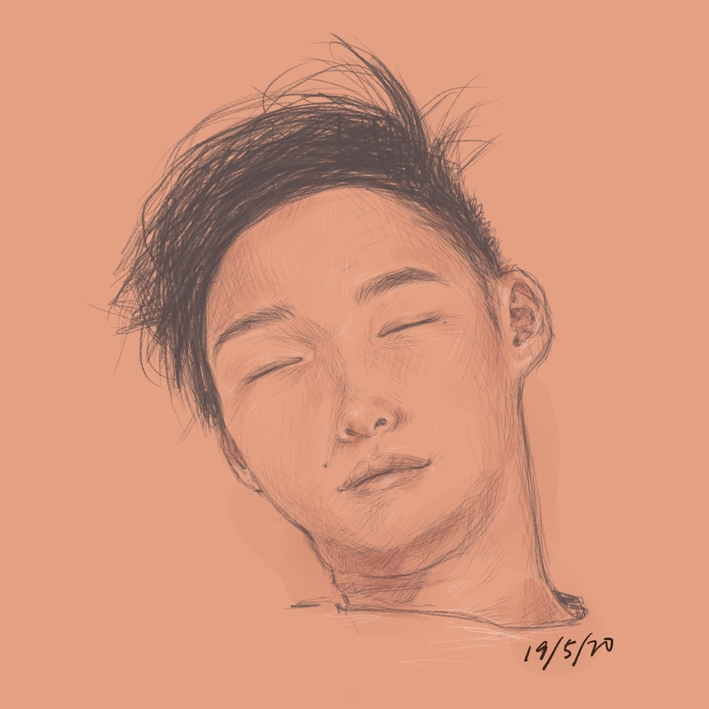

#100DaysProject
Choose a project, do it every day for 100 days.
Choose a project, do it every day for 100 days.
Hello, my name is Lai Peng and I am a full-time chiropractic student in Malaysia. In my spare time, I like to read, code, dabble a little in ultimate frisbee and in recent times, I enjoy some care-free doodling too.
picture credit: s/o
Amidst the Covid-19 pandemic, where majority around the world is stuck at home or isolated somewhere, I decided to look into Skill Share, in hopes of picking up a new skill. It was then that I stumbled upon 2 courses which inspired me to pick up coding and start doodling. What attracted me was not only how useful these skills can be but also the fact that it was super easy to start and truly anybody can pick up these skills.
The reason I chose doodling was because it would be able to capture my thoughts and my inner creative. So this would serve as some sort of journaling. I have zero eperience in drawing or doodling. I hope by the end of a 100 days I would have gained the skill to express my emotions through doodling and I also hope that I would've connected with you as you read through my doodles.
This website is will be a testimony to my journey into coding and doodling and I hope it brings you as much joy as it did for me. Also, I hope to show that it doesn't take a genius to pick up a new skill and if I can do it, you can do it too!
Day 1 of 100
Date: 15/05/2020
Description: Coming into this challenge I made sure to have fun and be loose, as is the point of this challenge. Initially, I had multiple brain farts when thinking of what to doodle. Then I asked myself a question: "What word would best describe how I've been feeling in recent days?". The word "Grow" came up repeatedly and I've associated growth with plants. Then, I put my hands into action. The reason I've chosen the letter R as the stem is because the commmon denominator between "gReen", "bRown" and "gRow" is R. Actually, I'm kidding, it's not as profound as it sounds. Hope you liked the artwork! :P
Day 2 of 100
Date: 16/05/2020
Description: This was actually completed in less than 10 minutes. I just drew what I was doing, which was brainstorming. I associated the brain, some thunderbolts and lightbulbs to the word "brainstorming" and this is the product. I guess at the end of a 100 days, I would hope that my creativity would come out flowing easily with an abundance of ideas. Hope you liked it!
Day 3 of 100
Date: 17/05/2020
Description: I wouldn't say that I'm very proud of how this turned out but I am somewhat satisfied. The aim of the doodle developed as I was doodling. At the end of it I hope I was able to potray the healthy and dried leaves, drawn with a single line, to be somewhat distorted. I'd give it a satisfaction rating of 5/10. Oh well, better luck tomorrow.
Day 4 of 100
Date: 18/05/2020
Description: I am very satisfied with how this turned out. It did take a lot of time but it was worth it at the end. The plan was to make an abstract. I started out with testing different shapes and just going with the flow. Initially, I was trying to draw a squiggly bird in the middle but that idea quickly broke down. After about an hour, this was the product.
Day 5 of 100
Date: 19/05/2020
Description: It was a bit of a struggle at the start and there were many things I didn't like during the process of drawing this. But I kept the mistakes and kept finding ways to overcome it. At the end, considering the amount of "mistakes" i made, I'm quite happy with how this turned out.
Day 6 of 100
Date: 20/05/2020
Description: In this doodle, I wanted to experiment with patterns, tribal patterns in particular. Without reference, I wanted to achieve sort of a malaysian pattern kind of doodle. I still couldn't see the "malaysian" in the end product but a tribal pattern nonetheless. Overall, was happier with how this turned out as compared to yesterday.
Day 7 of 100
Date: 21/05/2020
Description: Just a simple drawing today. I hard a hard time with brainstorming on what to do with this one but the inspiration for this slowly developed as I was just randomly drawing lines. Ended up, adding a cartoon character. Have yet to name him though, any suggestions?
Day 8 of 100
Date: 22/05/2020
Description: With this doodle, I was aiming to give off a sticker feel. I also experimented with the brush tool and the outcome of it was definitely quite satisfying. I would definitely love to experiment further with brushes in future drawings. Overall, not the most satisfied with how this turned out. However, I was running on lack of sleep after pulling an all-nighter for an exam when I made this doodle.
Day 9 of 100
Date: 23/05/2020
Description: I was thinking of muscle cells before I started doodling. It's a simple drawing but it was very time consuming.
At the end, I'm quite satisfied with how this turned out.
Day 10 of 100
Date: 24/05/2020
Description: More patterns! This I looked up on pinterest for inspiration. It was a good exercise and hopefully I'll be able to use these patterns in future doodles. In recent days, I've felt a bit disconnected with my doodles and it seems like I'm just doodling for the sake of doing it. Hopefully, I'll be able to get back on my feet and be more expressive in the future days.